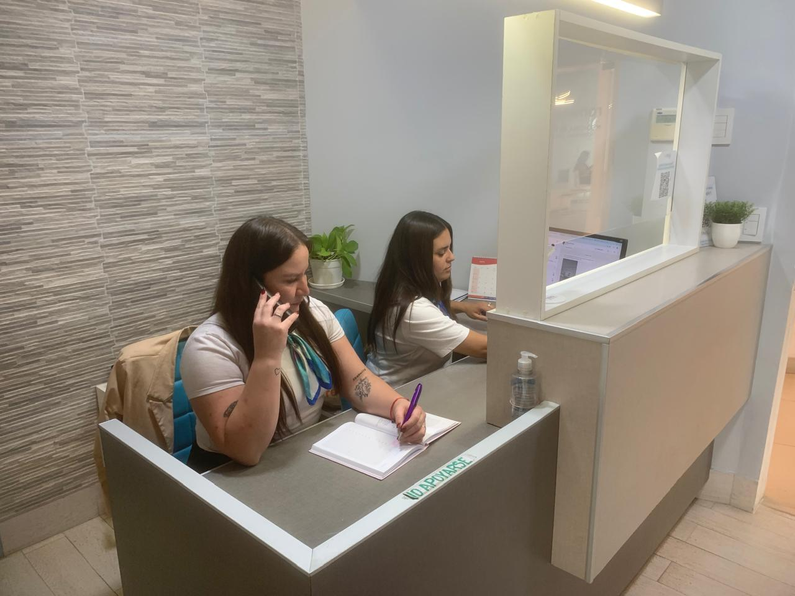

Quiénes Somos
Más de 20 años cuidando la salud de nuestra comunidad con dedicación y calidad humana. Nuestro modelo de atención personalizada pone al paciente en el centro de todo lo que hacemos.
ConocenosAtención médica integral con profesionales de primer nivel.
Solicite sus recetas al profesional correspondiente sin esperar turnos.
Solicitar Receta
Más de 20 años cuidando la salud de nuestra comunidad con dedicación y calidad humana. Nuestro modelo de atención personalizada pone al paciente en el centro de todo lo que hacemos.
ConocenosCardiología y Estudios
Cirugía
Cirujano Cardiovascular
Clínica Médica
Dermatología
Diabetología
E. Imágenes
Endocrinología
Flebología
Fonoaudiología
Gastroenterología
Ginecología
Neumonología
Neurocirugía
Neurología Infantil
Nutrición
Ortopedia y Traumatología
Otorrinolaringología
Pediatría
Proctología
Psicología
Urología
Contamos con un staff de profesionales especializados en múltiples disciplinas, comprometidos con la salud y el bienestar de cada paciente. Experiencia, trayectoria y calidez humana nos definen.
Ver Staff
Amplia variedad de especialidades y estudios médicos en un solo lugar: ginecología, cardiología, dermatología, diagnóstico por imágenes, nutrición y mucho más. Todo con equipamiento de última generación.
Ver Estudios

Estamos en Las Amapolas 325 PB of 3, SkyGlass 2, Del Viso. Contactanos por WhatsApp al 11 6611 1111 o sacá tu turno online en cualquier momento.
Cómo Llegar